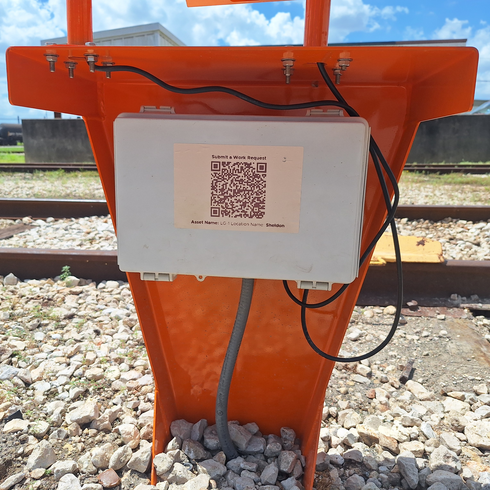
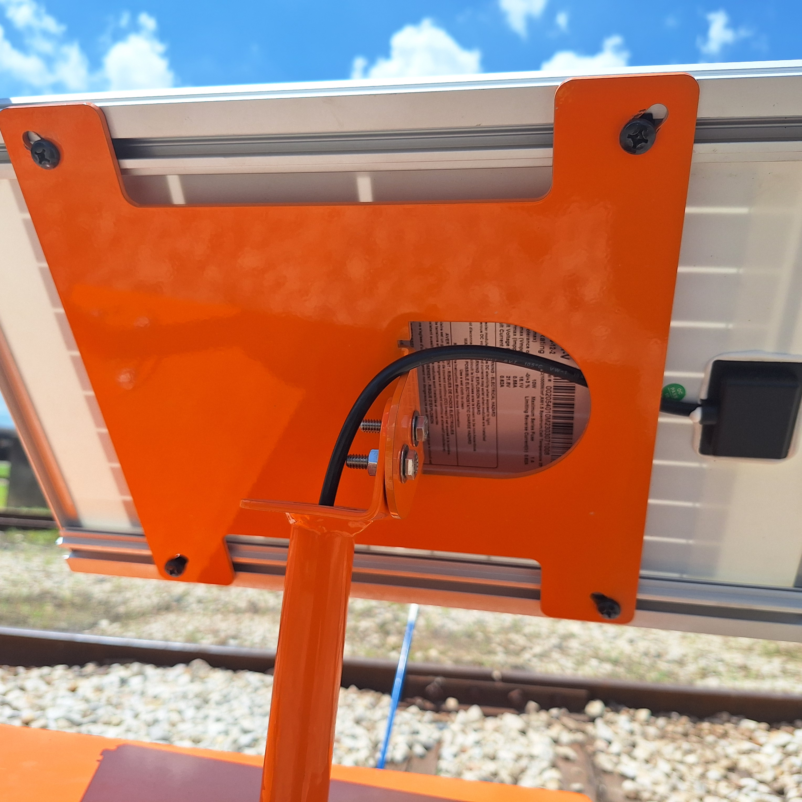
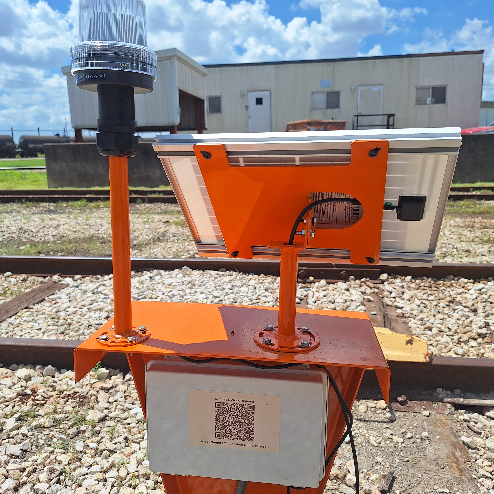
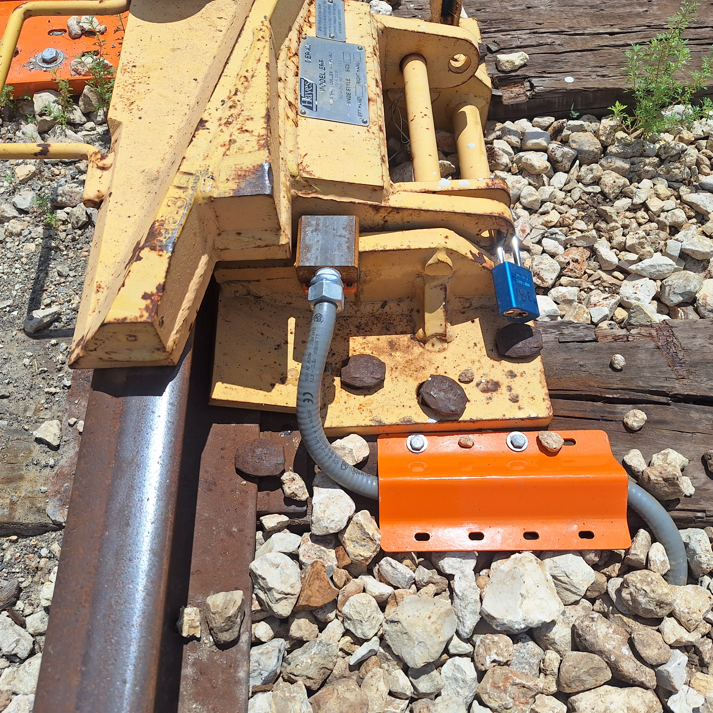

System Overview
Controller Assembly
Figure 1: Controller
Controller Stand
- Electronics enclosure is pre-installed to controller bracket.
- Includes two sets of mounting studs for the solar panel and light assembly.
Leveling Feet
- Support and stabilize the controller.
- Protect the underside of the main bracket from rock chips.
Solar Panel Assembly
Figure 2: Derail Solar Panel
Solar Panel Spider Bracket
- Attaches the solar panel to the mast.
Solar Panel Mast
- Supports the solar panel.
- Allows for rotation and tilt adjustment.
Light Assembly
- Communicates whether the derail device is open or closed
Figure 3: Derail Solar Panel
Sensor Assembly
Figure 4: Derail Sensor
Mounting Bracket, Flip-Style
- For installations on flip-style derail devices.
- May be cut to size if necessary, welding required for installation.
Mounting Bracket, Swing-Style
- For installations on swing-style derail devices.
Sensor Riser
- Supplied by Marmon for use with swing-style derail devices.
Sensor Module
- Monitors the opening and closing of the derail by detecting the presence of the metal plate.
Liquid-Tight Tubing
- Protects the sensor wires.
Tubing Cover Bracket
- Secures the liquid-tight tubing to the tie.
- Protects the tubing from damage.